Windows Event Viewer Troubleshooting Guide
1. System Crashes or Unexpected Reboots
- 6008 - Unexpected shutdown
- 41 (Kernel-Power) - System rebooted without clean shutdown
- 1001 - Bugcheck codes (BSOD details)
Log Location: Windows Logs → System
6008
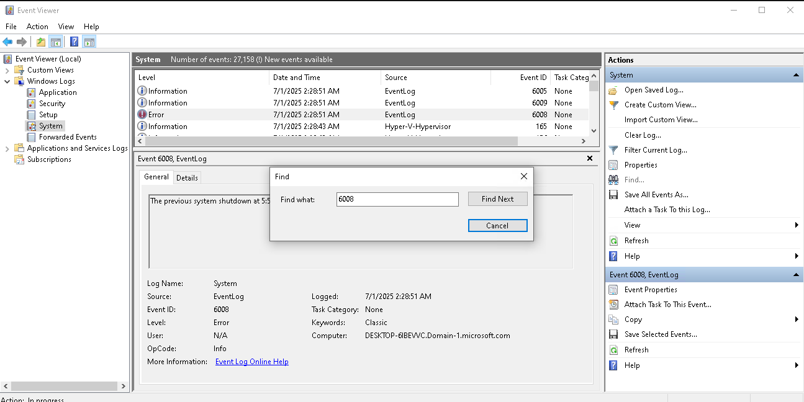
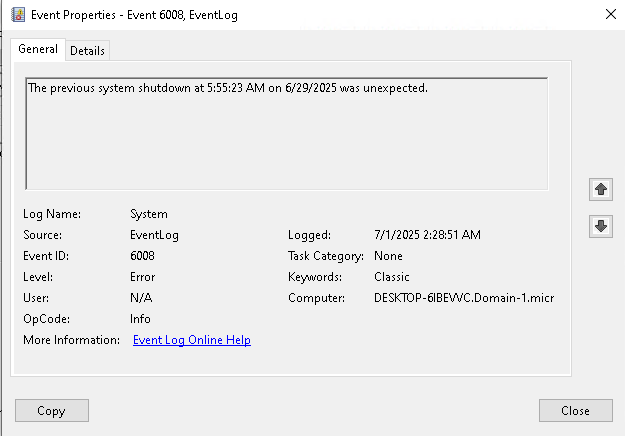
41 (Kernel-Power)
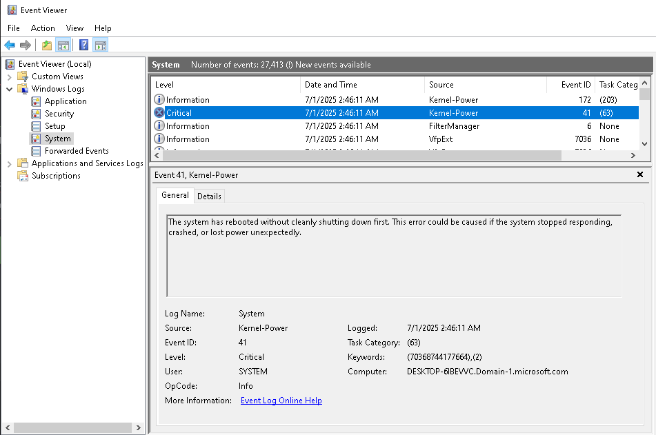
2. Application Crashes or Freezes
- 1000 - Application Error
- 1001 - Windows Error Reporting
- 1002 - Application Hang
Log Location: Windows Logs → Application
1000
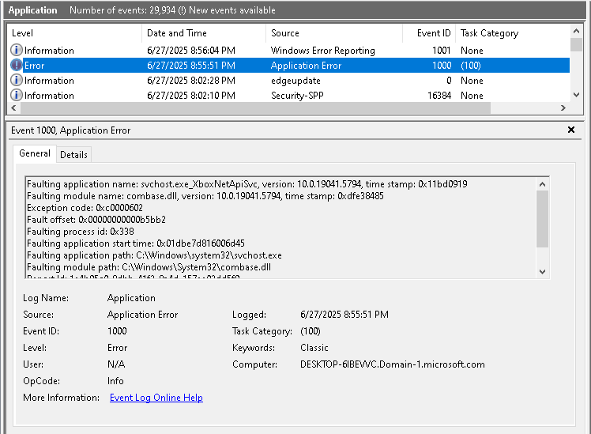
1001
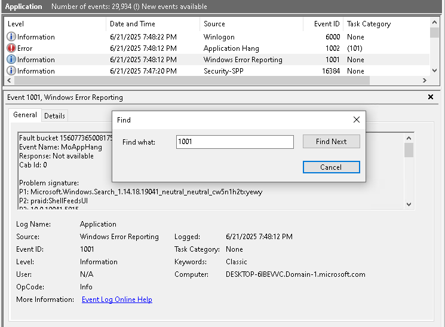
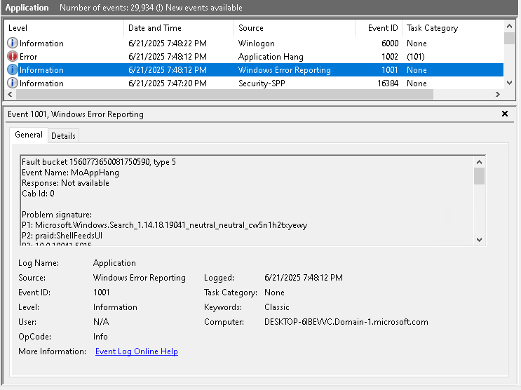
1002
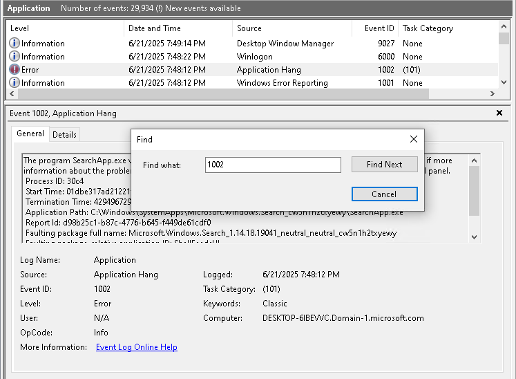
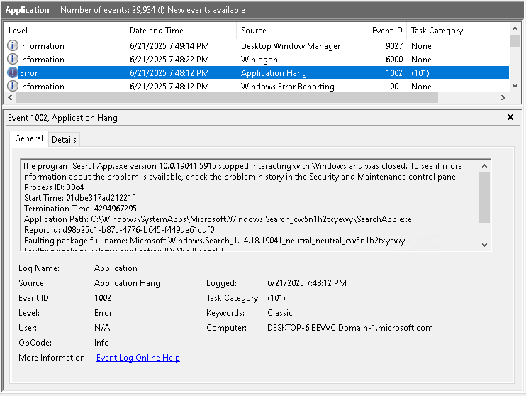
3. User Account Logon/Logoff Issues
- 4624 - Successful logon
- 4625 - Logon failure
- 4634 - Logoff events
Log Location: Windows Logs → Security
4624
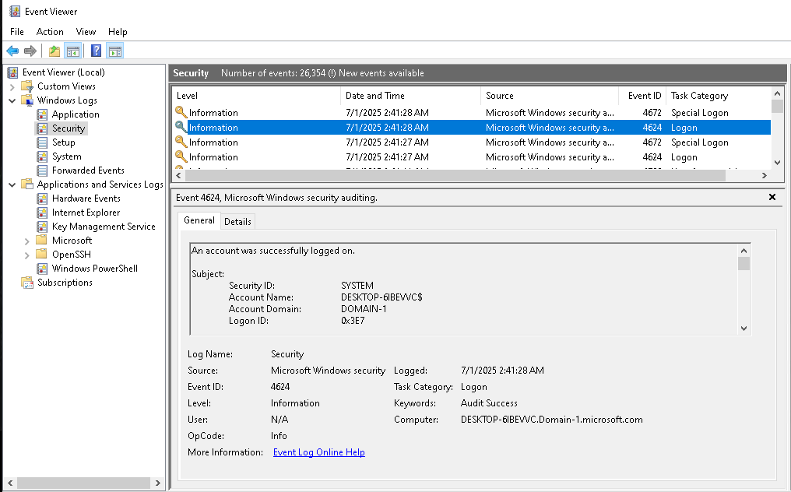
4625
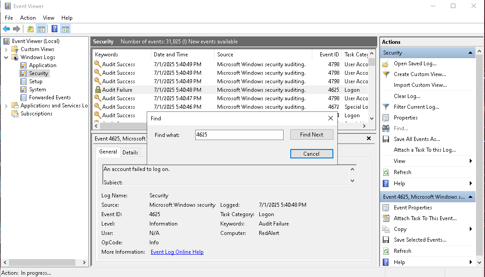
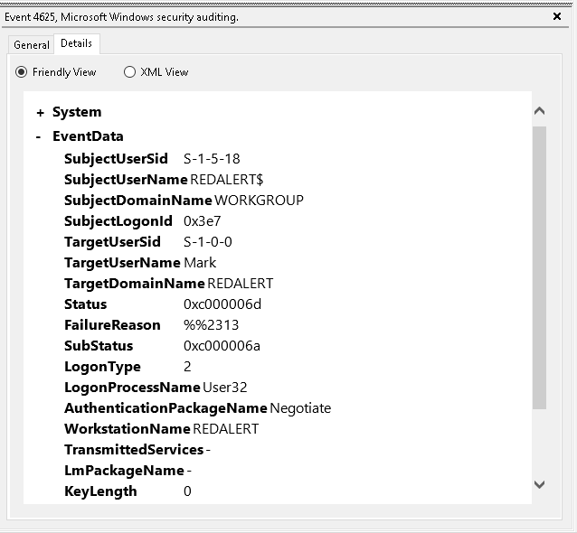
4634
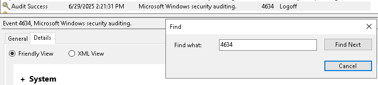
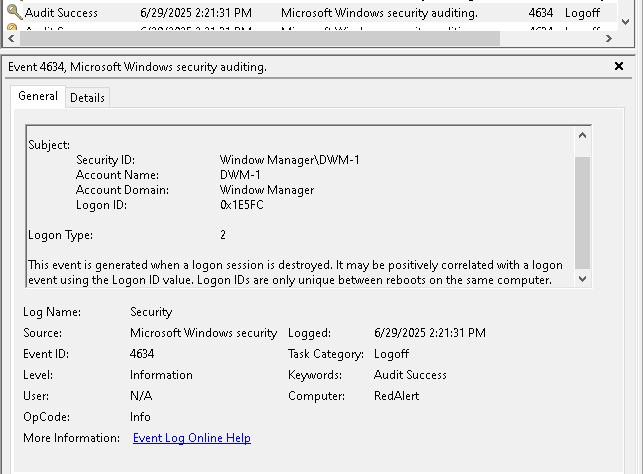
4. Windows Update Problems
- Failure events and error codes indicating update issues.
Log Location: Windows Logs → System, Applications and Services Logs → Microsoft → Windows → WindowsUpdateClient → Operational
5. Group Policy (GPO) Issues
- 7016 - GPO client-side extension errors
- 1129 - Policy processing issues at startup/logon
- 1058, 1030 - Problems accessing or applying GPOs
Log Location: Applications and Services Logs → Microsoft → Windows → GroupPolicy → Operational
6. Performance Issues (Slow Boot or Login)
- 100 - Boot Performance (slow boot)
- 101 - Application Performance (slow app start)
- 200 - Shutdown Performance (slow shutdown)
Log Location: Applications and Services Logs → Microsoft → Windows → Diagnostics-Performance → Operational
100
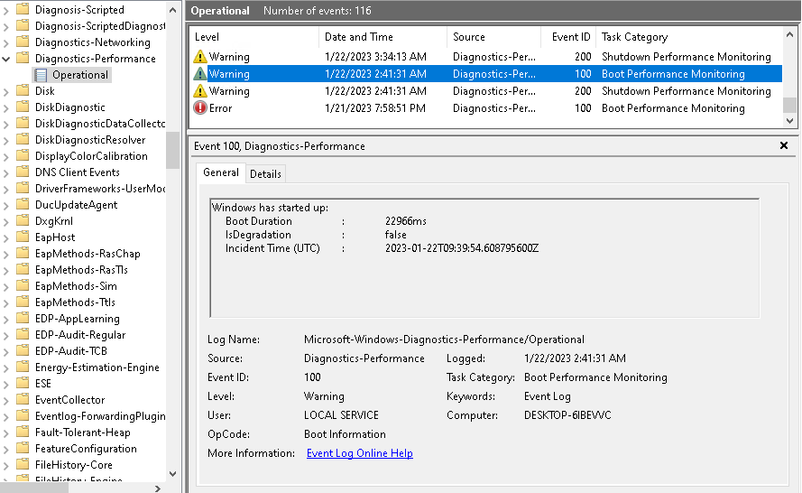
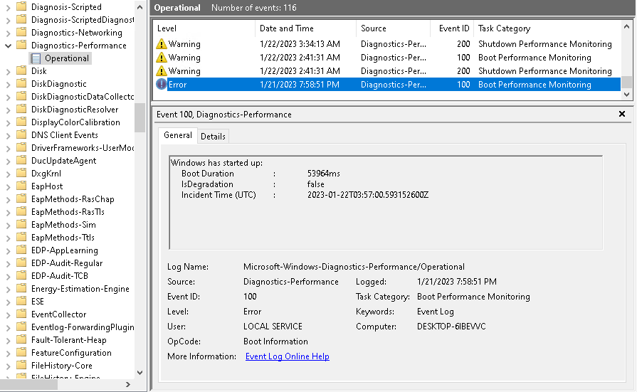
101
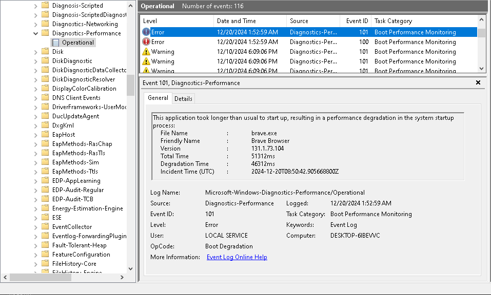
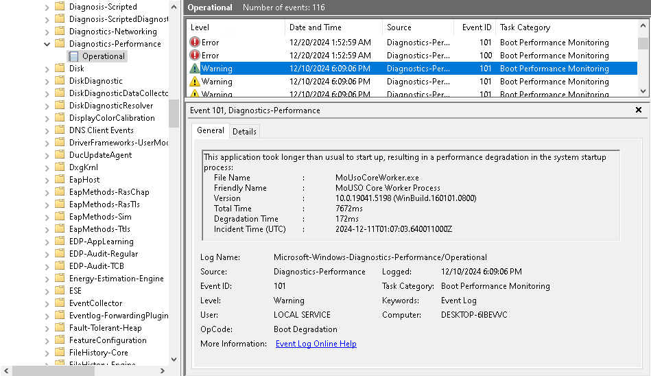
200
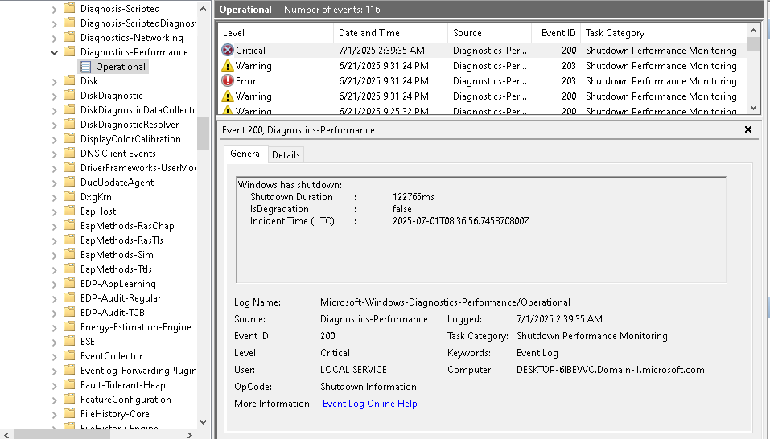
7. Driver Issues or Device Failures
- 7000, 7001 - Driver/service failed to start
- 7026 - Driver loading failures
Log Location: Windows Logs → System
7000
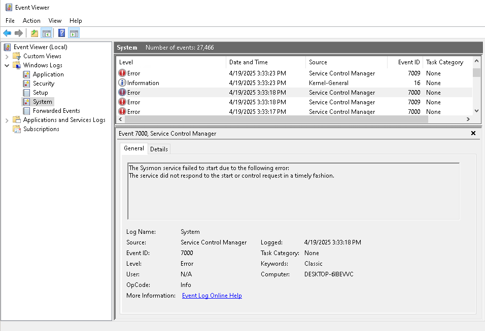
7001

7026
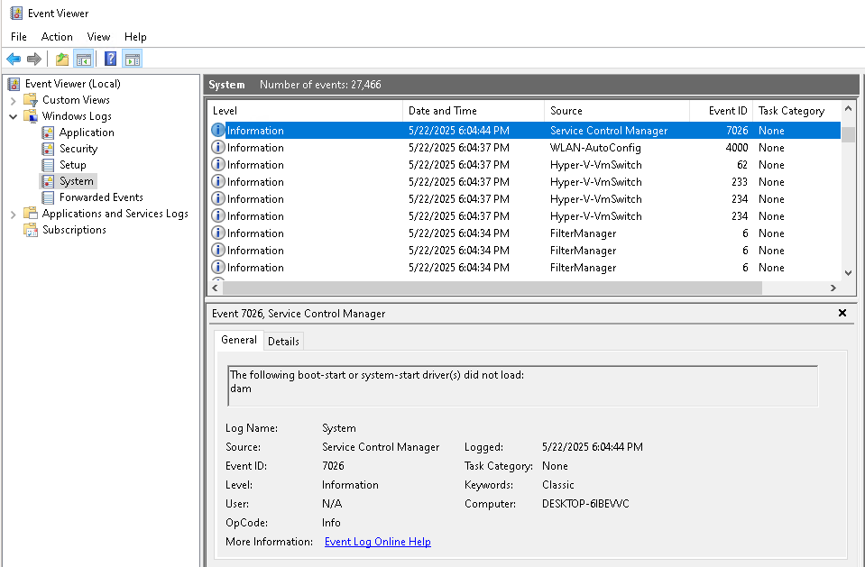
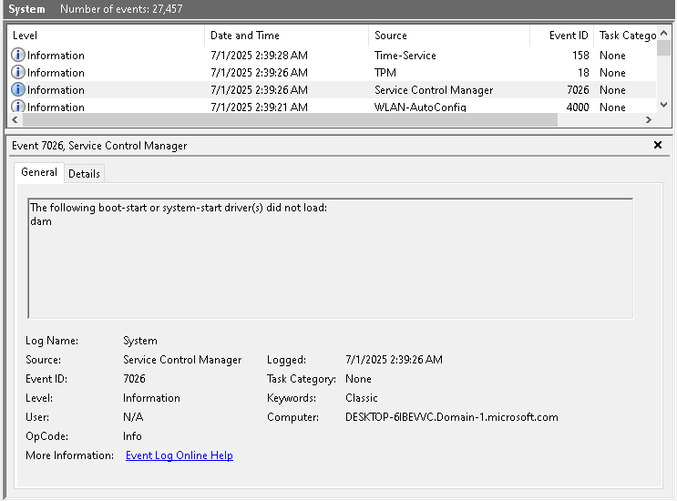
8. Malware or Security Incidents
- 1116, 1117 - Malware detection (Windows Defender)
- 4625 - Multiple failed logins (possible brute force)
Log Location: Windows Logs → Security, Application, Windows Defender
4625 - Multiple Failed Login Attempts
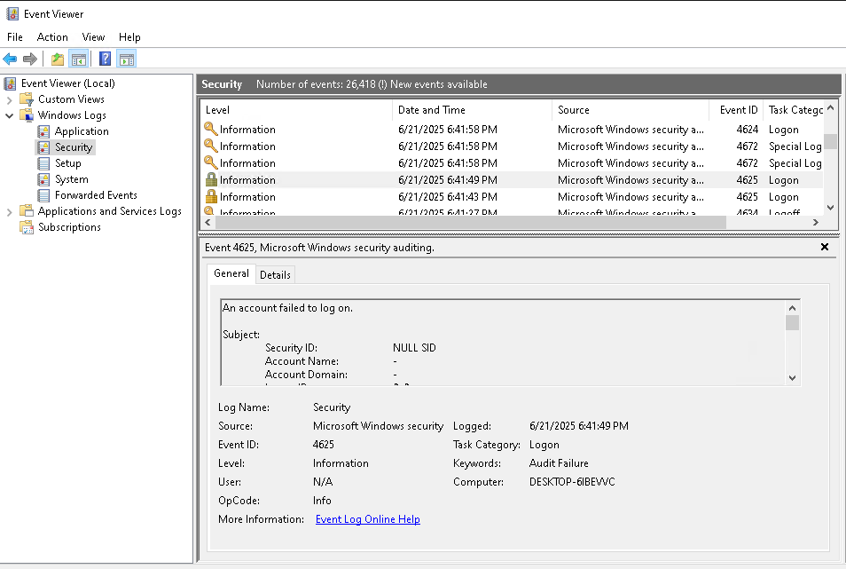
9. Disk and Filesystem Problems
- 7 - Disk bad block
- 11 - Disk controller errors
- 55 - NTFS filesystem issues
Log Location: Windows Logs → System
10. Print Job Failures
- 307, 372 - Print job failures or issues
- 7031 - Spooler service errors
Log Location: Applications and Services Logs → Microsoft → Windows → PrintService → Operational
Best Practices for Using Event Viewer
- Filter logs by severity and time
- Correlate events across multiple logs
- Export logs for deeper analysis and documentation
Back to Home